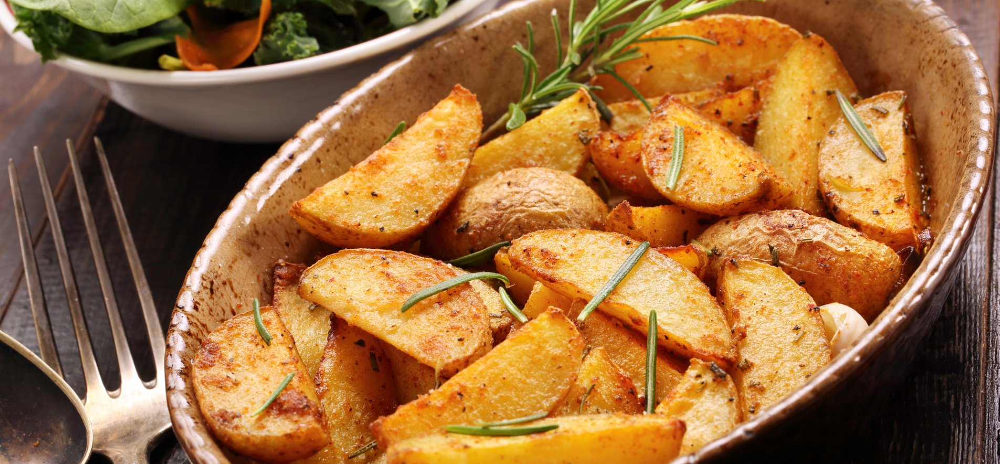

Картопля по-селянськи

Картопля по-селянськи – страва популярна у всьому світі. Вона смачна, готувати її досить
просто, і цей
овоч завжди є в наявності вдома або в магазині.
Картоплю по-селянськи обожнюють за рум’яну золотаву скоринку, що вкриває кожну скибочку, та за
ніжний смак
всередині.
- 7-8 картоплин середнього розміру
- 2 цибулини
- 4-5 печериць
- 5-6 смужок бекону. Також можна замінити салом
- Сіль за смаком
- Копчена паприка, розмарин
- Підготувати овочі. Помити та почистити картоплю, гриби, цибулю
- Картоплю нарізати великими скибками та поставити варитись. Після початку кипіння варити приблизно 10
хвилин. Це потрібно, щоб вона розм'якла всередині та легше піддавалася печінню
- В цей час нарізати гриби великими шматочками. Цибулю нарізати кільцями
- Після варки картоплі поставити духовку на 180 °C. Змастити противень (фольгу або пергамент)
олією та викласти туди картоплю приблизно на 5 хвилин, щоб дати їй просохнути.
- Поставити противень в духовку та запікати приблизно 10 хвилин. Після цього перемішати, додати гриби,
бекон та цибулю. Також посолити. Залишити ще на 5-10 хвилин.
- Знову перемішати, додати розмарин та копчену паприку. По набуттю картоплею твердої скоринки
духовку можна вимикати.
- Також в процесі можна додати трохи олії, якщо овочі будуть приставати до поверхні або
злипатися між собою